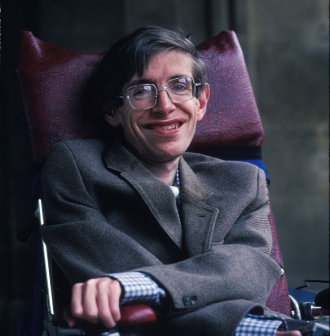

Stephen Hawking

Profesor Stephen Hawking 1942 - 2018
Cronología de un genio, Stephen Hawking:
- 1942 - Nace en Oxford, Inglaterra.
- 1959 - Inicia sus estudios universitarios en Oxford.
- 1963 - Le diagnostican a los 21 años esclerosis lateral amiotrófica (ELA), enfermedad neurodegenerativa.
- 1965 - Se casó con Jave Wilde con quien tuvo tres hijos.
- 1988 - Publicó su obra Una brebe Historia del Tiempo que plantea las teorias del big bang y la radiación de los agujeros negros.
- 2007 - Prueba la ingravidez en un viaje de dos horas en un Boeing 727-200.
- 2016 - Presentó el proyecto Breakthrough Starshot junto al multimillonario Yuri Milner, proyecto que propone lanzar nano-naves capaces de viajar en misiones de exploración hasta Alfa Centauri.
- 2018 - Fallece en Cambridge, Reino Unido a los 76 años.